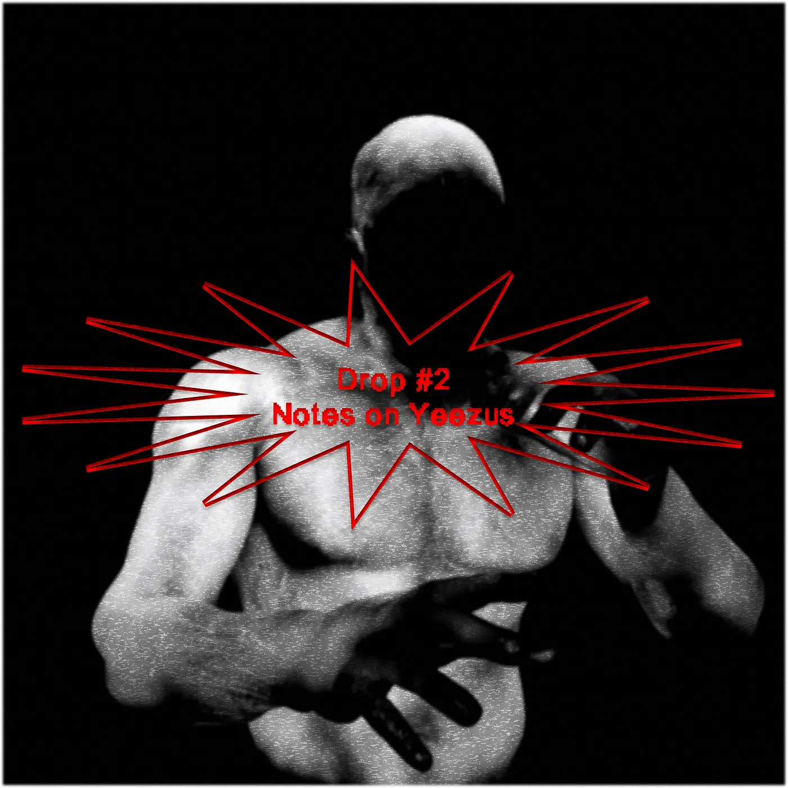
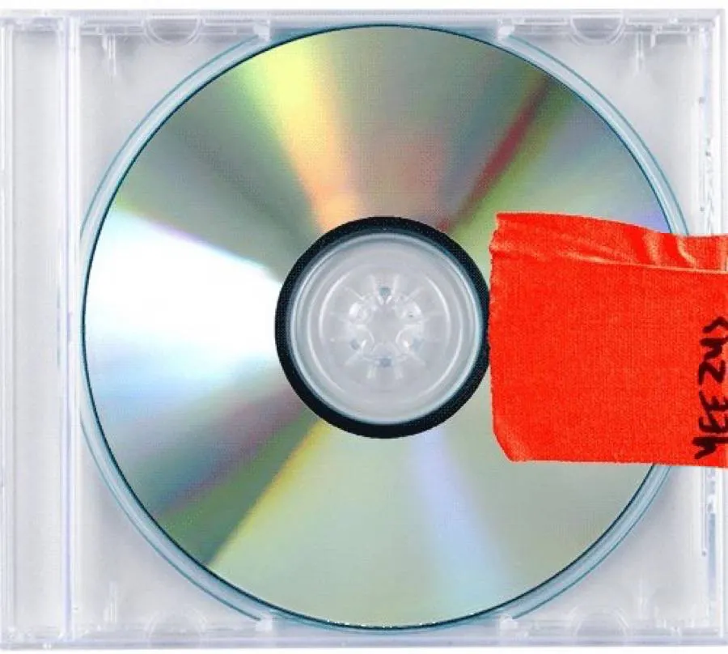
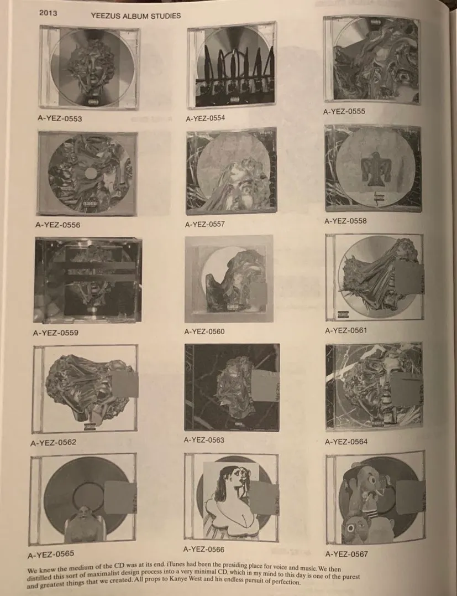

Drop #2 · June 19, 2023 · 7 min read
The tenth anniversary of a contemporary masterpiece

Hey everyone (▰˘◡˘▰)
This Drop marks the first time I dedicate a write-up to music on REINCANTAMENTO. The chance is offered by the 10th anniversary of one of my favorite records ever, Yeezus by Kanye West. Besides all the awful things that Ye said and done in recent years, my consideration of this album is unaltered and, given the occasion, I felt the urgency to express the reasons behind it.
Moreover, music is a fundamental component of the lenses through which I experience the world and it did play a crucial, yet undercurrent, role in this project’s development. It is my intent to make it more explicit. I could even dare to say that it’s through music that my interest in writing about culture and theory sparkled. I have no doubts if I had to trace an origin to my intellectual and perceptual pedagogy. My beginning falls on this exact same day, ten years ago: the 18th of June 2013.
As I reflect on my words, I realize that this is not the first occasion on which I have discussed that fateful day. It happened five years ago, in this post on Medium, before REINCANTAMENTO even existed in my mind, before my personal, molecular revolution erupted. At that time, I just moved to Amsterdam and Mac Miller just died. I was devastated. I now realize he was 26, as I am today when he overdosed from a mix of fentanyl, cocaine, and alcohol in his studio in LA. I recall vividly crying in an almost empty student accommodation room, yet to become my room, the cruel sunlight of Dutch late summer coming from the window. I was blonde and it felt like I lost a sort of protecting, big brother figure that was evolving next to me during my formation years. A part of me was crying for the end of my adolescence, which surely terminated in ‘18, washed away in the canals of an old, big city and in the hazy smoke of forgetfulness.

Mac Miller dropped his second studio album - Watching Movies With The Sound Off - on the 18th of June 2013. That same day, Kanye West dropped Yeezus, his sixth album. I couldn’t know but the moment that I heard the laser, chainsaw synth sound that opens the album’s first song, “On Sight”, I was about to experience an initiation. The arpeggio is “non-musical, super aggro, really noisy”, to quote Rick Rubin, who notoriously worked on the album. Kanye starts rapping at 0:33.
Yeezy season approachin'Fuck whatever y'all been hearin'Fuck what, fuck whatever y'all been wearin'A monster about to come alive again
No declaration of intent was ever clearer. Kanye proceeds to rap an obscene, vulgar verse: “Black Timbs all on your couch again / Black dick all in your spouse again”. This can’t be the man that wrote hip-hop Jesus Walks or Power. Ye’s rhymes are downgraded, hyper-simplified, and ready to be hashtagged and twitted out. He doesn’t give a fuck anymore and he’s telling you.
How much do I not give a fuck?Let me show you right now 'fore you give it upHow much do I not give a fuck?Let me show you right now 'fore you give it up
And the soul sample kicks in. The chorus of “He’ll Give Us What We Really Need” by the Holy Name of Mary Choral Family, singing: “Oh, he'll give us what we need / It may not be what we want”. Re-listening, I am surprised at how blatantly he’s stating his intentions. He’s burying his old persona, the “Pink-ass Polo with a fucking backpack” rapper-producer, dear to the music critics. It truly is Black American Psycho, as Yeezus was rumored to be named before its release. “R-right now, I need you right now”, Kanye sings as the laser storm takes over the second part of the track, covering every trace of humanity under the inhuman blips of two sapient cyborgs, Daft Punk, who produced the song.
I could stop here. 2 minutes and 36 seconds encapsulate the whole album. I find that Yeezus possesses a fractal quality: the album is composed of ten songs which all contain a micro-universe of patchworked elements glued together by a fast-paced montage. It’s a minimalist frame - look at that album cover - containing a number of smaller, maximalist fragments. A cocktail of typical Kanye fixations, new discoveries, and external outputs, condensed into 40 minutes.
It also works the other way around: the entire project is a perfect encapsulation of Kanye’s entire career and an anticipation of his impending decline. The album finds Ye on the edge of losing it, standing “on the top of the mountain” facing down all his demons, his anxieties, frustrations, and insecurities. “If you stare into the abyss, the abyss stares back at you”, Friedrich Nietzsche famously stated in Beyond Good and Evil. With Yeezus, Kanye stared at his void abyss and alchemically transmuted the worst out of it in a propulsive, devastating work of art. It captures him in a raw and vulnerable state, perhaps one of the last instances before his complete immersion in Christianity and, later on, the controversial associations with fascism. He’s a naked beast here, convulsing restlessly, against the world, greatly depicted by the 3D, nightmarish figure in the hallucinated “Black Skinhead” video.
On the level of its cultural impact, Yeezus contained, in potentia, the following decade. All the guests and collaborators left an undeniable mark on the mainstream cultural landscape that followed this album. Besides the aforementioned Daft Punk and Rick Rubin, Yeezus brought together a crucible of emerging talents. It served as a breeding ground for new sounds and genres that would shape the music of the time. On one hand, you have trap and drill music raising from the peripheries of the crumbling American empire, represented by Chief Keef, King Louie, and their more pop-oriented counterpart Travis Scott. On the other hand, Yeezus’ production is enriched by this new wave of electronic producers - Arca, Evian Christ, Hudson Mohawke, Gesaffelstein - who will deconstruct club music for the entire 2010s just to reassemble it in an evolved, hybridized form at the beginning of this decade. The album features two of the most iconic voices of our times, Bon Iver’s Justin Vernon and Frank Ocean, both at the beginning of their mainstream careers. The Yeezus Tour was opened by the best rapper of our time, Kendrick Lamar, who also contributed to some writing. The art direction is curated by the number one designer of the Insta-generation, the late Virgil Abloh.

Lou Reed, in his poignant review of the album, wrote shortly before just his passing, understood the extraordinary capacity of Kanye to be a gravitational point, an attractor for a number of different artistic expressions:
“Kanye is there. It’s like his video for “Runaway,” with the ballet dancers — it was like, look out, this guy is making connections. You could bring one into the other — ballet into hip-hop — they’re not actually contradictory, and he knew that, he could see it immediately. He obviously can hear that all styles are the same, somewhere deep in their heart, there’s a connection. It’s all the same shit, it’s all music — that’s what makes him great. If you like sound, listen to what he’s giving you. Majestic and inspiring.”
For my fifteen-year-old brain, Yeezus was a sonic, lyrical, and cultural assault, rewiring my musical and cultural perceptions. I was just beginning to explore hip-hop and indie rock. The expanded album roster revealed an entire musical world but my discoveries branched out in different directions. I found out about Nina Simone through her sample in Blood on The Leaves. I found out about Chicago’s homicide rates and about Death Grips’ music due to all the comparisons. I think I even found out about Kim K and the whole Kardashian gang through this album’s mythology (the “Bound 2” video). Overall, such a pure disclosure, which alimented my curiosity for years, can only affect you in the unbalanced sweetness of adolescence.
In the end, Yeezus’ terrifying greatness lies in its incredible musical moments. From “Black Skinhead” ritualistic drums meshing into dogs barking to the glitched screams at 2:12 in “I Am a God”. Kanye synthetic crooning in the “Blood on the Leaves” outro. “New Slaves” frantic second verse and so many more. The hyperviolent, oddly sensual energy of King Louie’s in “Send It Up”, culminates in the sample of Beenie Man’s track “Memories”, among many others. Ten years later, it still sounds adventuristic, audacious, and absolutely unparalleled in the mainstream landscape.